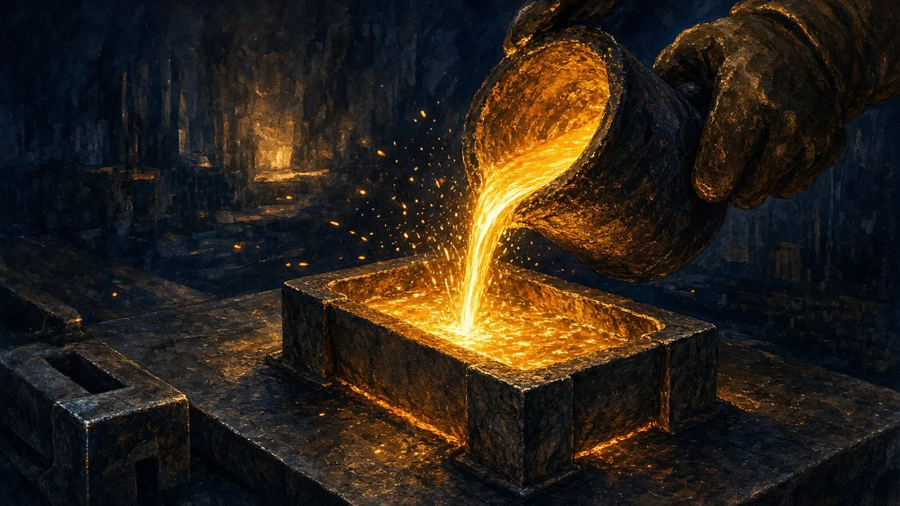

- Define C1, AISC and AIC and sort cost items into each per WGC guidance
- Spot four common AISC games
- Place a producer on an industry cost curve and judge its downside resilience
On this page
Margin is the share price
For a producer, almost every share-price move traces back to price − cost. Costs therefore get more scrutiny than any other number, and companies have every incentive to present them flatteringly.
The cost metrics
- C1 cash cost (Wood Mackenzie's definition, common in base metals): direct site cash costs of mining, processing, site G&A and concentrate freight and TC/RC, net of by-product credits. It excludes royalties, sustaining capital and corporate overhead.
- AISC (All-in Sustaining Cost), from the World Gold Council standard (2013, updated 2018): C1-type costs plus royalties and production taxes, sustaining capex, capitalised sustaining stripping and development, near-mine exploration, corporate G&A, sustaining leases and reclamation accretion. It is reported per ounce sold.
- AIC (All-in Cost): AISC plus non-sustaining costs, such as new-project capital, greenfield exploration and studies.
None of them includes interest, income tax or dividends.
A copper mine with lots of gold can report C1 net of gold credits. If the credits exceed the costs, C1 can be negative. That is legitimate, but it makes the "copper cost" a bet on gold. Co-product accounting splits costs between metals by revenue share instead.
Ivanhoe reports Kamoa-Kakula's C1 cash cost excluding royalties ✔. That is consistent with the C1 convention, but royalties in the DRC are material. Always check what is in and out before comparing two companies.
Sustaining vs growth capital
Sustaining capex keeps the current operation running: fleet replacement, tailings lifts, underground development to maintain output. Growth capex expands or builds something new. The split is a judgement call, and it is the most important AISC game of all.
- Stockpile drawdowns. Milling old stockpiles whose mining cost was incurred earlier lowers reported AISC temporarily.
- Capitalised development and stripping. Classifying waste stripping or development as "growth" moves cost out of AISC.
- The growth/sustaining split. A mature mine with ever-larger "growth" capex is probably relabelling sustaining capital.
- Leases. Leased fleet and power stations can sit outside "capex". Check that lease payments are included.
Cross-check AISC with free cash flow per ounce (Module 7). If the gap is persistent and large, the AISC is flattering.
Comparing lithium and base metals
Lithium producers usually quote FOB cost per dmt of concentrate, not AISC.
- PLS, June 2024 quarter: unit operating cost (FOB) US$591/t against a realised price of US$840/t ✔. That is a thin margin at the bottom of the lithium cycle.
- Liontown guided C1 of A$651/dmt for Kathleen Valley (Sep 2023) ✔. Always check the grade basis (SC5.2? SC6?) and whether royalties and freight are in.
Cost curves and the marginal producer
Line up every producer in an industry by cost, with bar width = production, and you get a cost curve. The price tends to find support near the cost of the marginal high-cost producers in a downturn, because they stop producing. Low-cost producers survive every cycle. High-cost ones are leveraged options on price.
Capital intensity
Capex ÷ annual production (e.g. A$ per annual ounce, US$ per annual tonne of copper)
Hemi's DFS: A$1,345m ÷ 530 koz ≈ A$2,540 per annual ounce (DFS years 1–10 average). Compare with peers in the same jurisdiction and year. Capital intensity has risen sharply industry-wide since 2021 unverified.
A$ costs vs US$ prices
Australian producers incur most costs in A$ and sell in US$. A weaker AUD lowers costs in US$ terms, which widens margins (Module 12). When comparing an ASX producer's AISC with a Canadian or US peer, convert at the same exchange rate, and remember that A$ AISC is not US$ AISC.

- DFS AISC: A$1,229/oz (years 1–5); A$1,295/oz (years 1–10).
- At ≈A$5,750 spot gold as of 29 Oct 2026, the DFS AISC implies a margin of ~A$4,450/oz, a 77% margin and very low leverage. But costs have risen since 2023. What is a realistic AISC for a FID in FY27? Stress-test it at +30% to +50% in Module 17.
- Capital intensity: ≈A$2,540 per annual ounce at DFS capex. Compare with recent WA builds.
- AISC games to watch in ramp-up: capitalised pre-strip, and early oxide stockpiles flattering costs.
- AISC improving while FCF/oz deteriorates
- A mature mine reporting big "growth" capex every year
- C1 quoted without royalties in high-royalty jurisdictions, compared with peers who include them
- Lithium costs quoted on different grade bases or with freight excluded
Practice tasks
Checkpoint quiz
Score 80% or more to mark this module mastered. Your best score is saved in this browser.